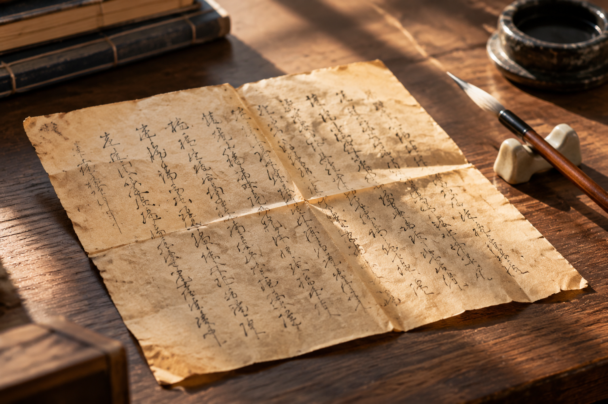

西安旧手稿折叠处的断线，别急着算成停笔
折痕、磨损和拍摄阴影都可能让墨线显得中断。面对旧纸张，先确认纸面状态，再讨论局部书写现象。

断线可能来自纸面状态
西安旧手稿的照片中，折痕位置常出现亮边或阴影，磨损处也可能失去部分墨迹。模仿笔迹参考若只截一小段线条，很难知道中断是否恰好落在折叠处。先看完整纸面，再将折痕附近放大，有助于识别需要进一步核对的位置。
不要在图片里补画缺口
为了让字看着完整而修补墨线，会改变可见材料。阅读需要可另附文字释读，但原始照片应保持不变。不清楚的笔画就保留不清楚，后续有机会补拍时再检查；自动修复得出的连续线条不能当成纸上原来存在的细节。
落款同样需要纸面参照
模仿签名、模仿签字样本若位于折叠、装订或破损区域，应说明这一条件。局部图与整页使用同一编号，避免后来只剩一个看似停笔的截图片段。纸面缺口和书写停顿属于不同问题，图像不足时不宜强行区分。
保留来源与状态记录
笔迹鉴定资料整理中，可写明是否有原件、是否仅有旧照片，以及可见的折损位置。不要为了拍平而自行处理脆弱材料。先将现有条件如实记录，再确定还需要什么补充图像，通常比反复增强同一张照片更有效。